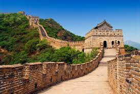

muralla china

La Gran Muralla China es una antigua fortificación china,1? construida y reconstruida entre el siglo v a. C. y el siglo xvi para proteger la frontera norte del Imperio chino durante las sucesivas dinastías imperiales de los ataques de los nómadas xiongnu de Mongolia y Manchuria.